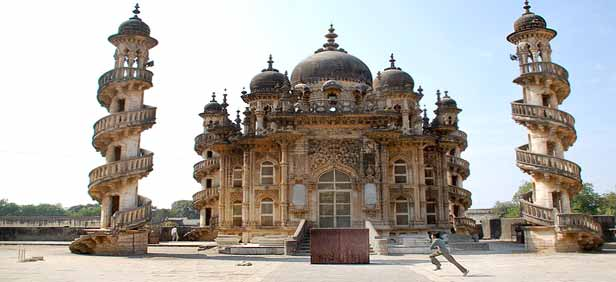

Few places offer you the chance to probe the earth and the heavens, the human and the wild, as Junagadh does. Towering over the city is Mt. Girnar, a holy site for Hindus and Jains that is climbed by a 9999-step staircase along peaks studded by temples that reach for the sky and look out across the plains. Walking up these stairs in pilgrimage is a unique experience of striving towards the heavens. Back at the base of the mountain, however, deep in the heart of the oldest quarter of the city, you can walk down into the depths of the earth in a pair of ancient stepwells that were not built, but hewn out of solid rock. Spiraling down the staircase of thousand-year-old Navghan Kuvo, plunging 170 feet into the heart of solid rock to find life-giving water at the bottom, is an unparalleled contact with the elements that sustain us.

In the city of Junagadh, you can reach out and touch the two and a half millennia of human civilization, spanning dominant periods of Jainism, Hinduism, Buddhism, and Islam, all of whom left deep imprints on the city. And then you can set off for the Gir National Park to come face to face with the utter wildness of the last of Asiatic Lions, where human civilization is still just incidental to the natural rhythms that have continued for centuries.
The city of Junagadh, along with Mt. Girnar that looks down upon it, appear in stories and hearsay from long ago, beginning with associations with Krishna during his life in Saurashtra. Reportedly, the main center of the city, the fort known as Uparkot, was built by Chandragupta of the Mauryan empire around 320 BC, and archaeological evidence confirms this, showing that Uparkot has been inhabited continuously since the 3rd century BC. Hence the name Junagadh, which means “ancient fort.” Under the Mauryans, Junagadh was a regional capital, and Emperor Ashoka had stone edicts placed there, still visible today.
Junagadh remained important as a regional capital until the 5th century. Then under the Rajputs and Solankis it was less important, as power centers shifted to near Bhavnagar (until the 10th century), later to Patan (until the 15th century), where it stayed when the whole of Gujarat became a province of the Delhi Sultanate, and then to Ahmedabad when Gujarat again became an independent Sultanate. The Mughals took over in the early 16th century, and continued to rule from Ahmedabad, so it was not until the mid 18th century as Mughal rule was in decline that Junagadh once again became an independent princely state, established by an Afghan named Sher Khan Babi, with its capital here.
By the time of Independence from British colonial rule, all the princely states (which numbered 565, and around a hundred were in Saurashtra alone) were given the choice of acceding to India or to Pakistan, with Mountbatten’s caveat that effectively, states could only accede to a nation with whom they shared borders. This determined the choice for nearly all of them. In Junagadh, however, the Nawab opted to accede to Pakistan, saying Junagadh neighbored Pakistan through the sea. India objected, given the 80% Hindu majority, but Pakistan countered that if India could claim Kashmir, with a Muslim majority but a leader who chose India, why should Junagadh not be in Pakistan. After several backs and forths involving uprisings by some parts of Junagadh state, Indian troops being sent in, and many diplomatic maneuvers, the Nawab fled to Pakistan, and a plebiscite was held. The vote overwhelmingly favored joining India, and Junagadh became a part of Saurashtra state, and eventually part of Gujarat.
How to get there
By road: Junagadh is 327 km from Ahmedabad, 102 km from Rajkot, and 113 km from Porbandar, and is accessible by ST bus from each of these places, as well as from other cities in Gujarat by way of Veraval and Rajkot. Bus is recommended as the best way to get to Junagadh.
By rail: Two express trains run on the Ahmedabad-Veraval line, one at night (with a rather inconvenient schedule) and one by day. Ahmedabad is 7.5 hours away by train. Junagadh is also on the Rajkot-Veraval line, with Rajkot 2.5 hours away, and Veraval 2 hours.